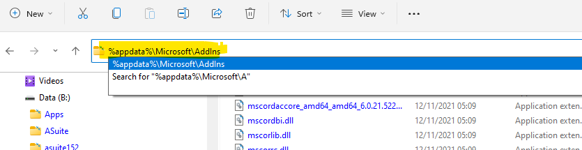
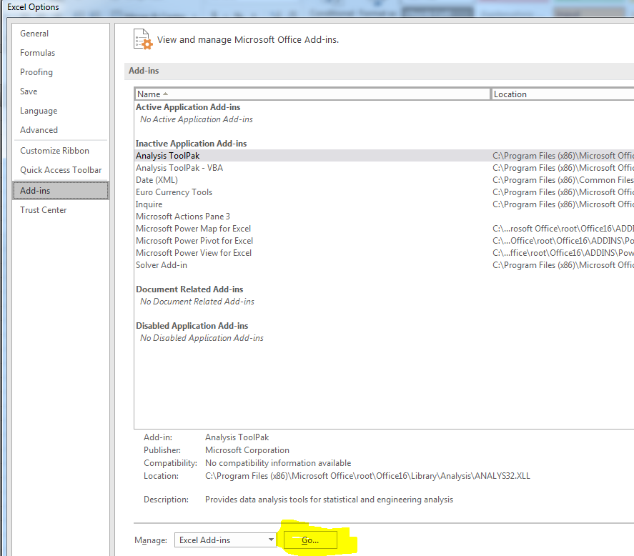
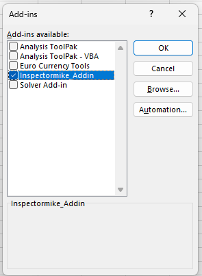
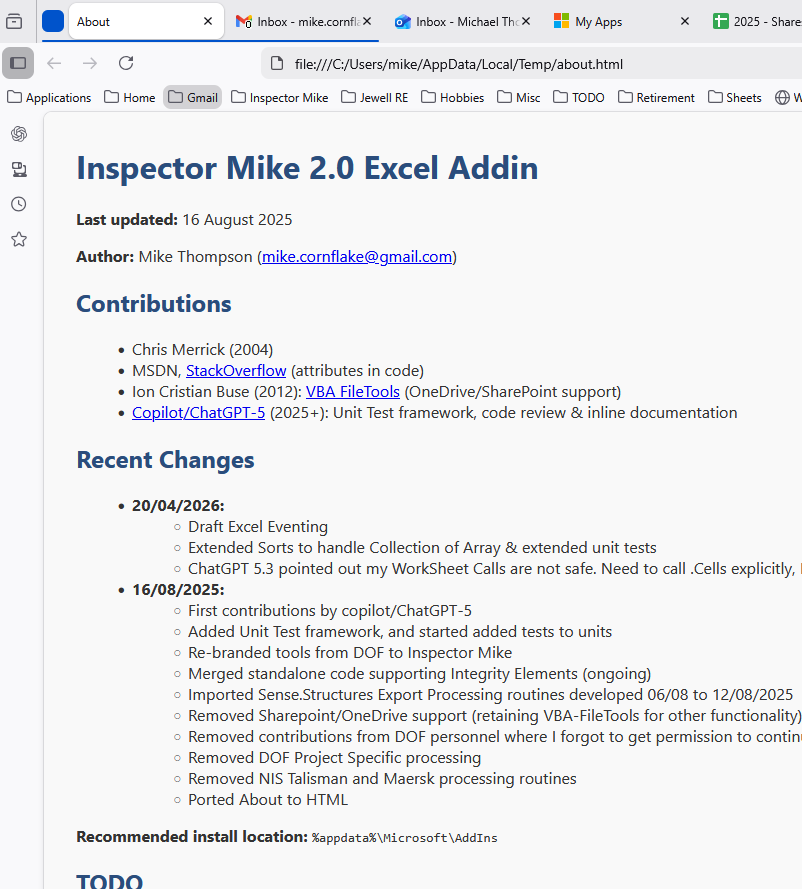
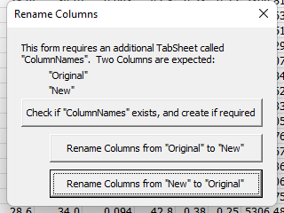
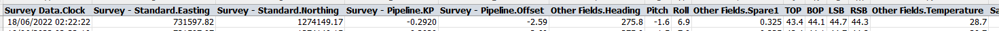
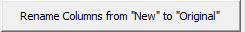
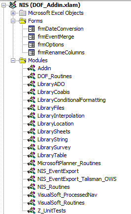
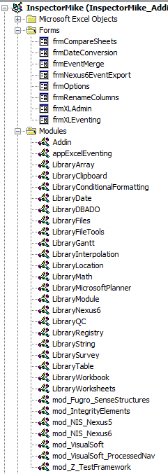

1 Inspector Mike - Excel Addin 2
1.4.3 Export Current Sheet As CSV 7
1.4.6 Interpolate NAV to 3 Sec 10
1.4.7 Format Standard Columns 11
The routines contained within InspectorMike_Addin.xlam have been developed over time, being started in 2004.
They are designed to:
Streamline repetitive tasks
Ensure consistent formatting for deliverables
Provide enhanced functionality over that possible in the original application.
| Close Excel, and use Task Manager to ensure there isn't a frozen instance of Excel still present | |
|---|---|
| Find “InspectorMike_Addin.xlam” | On a vessel for Chevron:
|
| Copy “InspectorMike_Addin.xlam” to the correct location on your PC | Destination folder has to be: %appdata%\Microsoft\Addins (Just paste %appdata%\Microsoft\Addins into the address bar in Windows explorer and hit enter)  |
| Once InspectorMike_Addin.xlam is installed in the correct folder, Open Excel, then navigate to File – Options – Add-ins – “Go…” |  |
| Click Browse, navigate to “%appdata%\Microsoft\Addins” and select “InspectorMike_Addin.xlam” |  |
| Congratulations, you now have Inspector Mike Addins | |
| Close and re-open Excel | If this step isn’t followed, then the add-in may need to be re-installed next time you run Excel |
Use the “About” add-in to confirm the “last update” date for the installed INSPECTORMIKE add-ins
Close Excel
Locate the updated file “InspectorMike_Addin.xlam”
Update the file “InspectorMike_Addin.xlam” in the installed location (“%appdata%\Microsoft\Addins”)
Re-open Excel
Use the “About” add-in to confirm the “last update” date for the newly installed INSPECTORMIKE add-ins
Assume the worst, backup often
There is minimal error checking within these routines
Assume the worst, backup often
If a routine is used on a sheet it wasn’t designed for, then, well, let’s just say there may not be a happy ending. This is more true for the Nexus and VisualSoft Tools.
Assume the worst, backup often
The following documentation is more to ensure the Use-Case for each routine is understood
Assume the worst, backup often
Primarily implemented to allow versioning using the “Last Updated” date and “Recent Changes”. Opens a web page. Excel will mildly complain, go ahead and allow it to open this page.

This routine was developed because I got annoyed performing the same formatting again and again…
Designed to perform simple formatting on tabular data:
Header row is formatted and “frozen”
Filter is turned on
Attempt to ensure each column and row is suitably sized
Font set to “Tahoma” “10”
| Before |
|---|
| After |
|
Don’t Use:
On blank spreadsheets
On tables that don’t have the header in Row 1
On tables that don’t have data in Column A
This was developed during the 2016 Chevron Pipeline processing. As part of the processing, data is exported from VisualEdit in Excel or CSV format, then processed in Excel. The result must be saved in CSV format prior to re-importing into VisualEdit. Ah, but Microsoft dislike CSV format, always has done. They deliberately don’t load it correctly, they don’t save it correctly and they will pester you with repetitive warnings when you try to save, and will leave you with the CSV file open, not the original Excel file you were working on.
This routine bypass all that:
Saves the current sheet as a CSV in the same folder as the existing Excel file
Ensures date/times are saved correctly
Has a bash at ensuring the correct Unicode is used in the resulting CSV (ie handle funny characters like Ø correctly)
Closes the CSV file in Excel, and re-opens the original Excel file
In other words, Excel will look the same following this macro, but you’ll have a new file in the correct folder…
Although developed for a specific case (Chevron Pipeline Processing), this will work on all worksheets that contain tabular data.
Don’t Use:
On blank spreadsheets
Designed for preparing a whole slew of appendices during final reporting (INSPECTORMIKE Doc Control insisted that all spreadsheets be incorporated into the PDF deliverable).
Open all the Excel files you need to convert.
On each file, click the “Save As PDF and Exit”.
When there are no Excel files left open, you have finished.
What this doesn’t do is apply any formatting (ie Landscape, fit to A3 wide). It assumes this has already been performed.
Developed primarily for Malmapaya after they moved from Nexus 5 to Nexus 6.
Nexus 5 was able to deal with reprocessed navigation data being supplied per metre. This meant up to 8 seconds between records (ROV slowing at start and end of inspection runs). Nexus 6 introduced new limits, now there could only be intervals of no more than 4 seconds between survey records.
A feature request is in with Wood to allow this interval to be increased. In the meantime, this routine was developed. It takes pretty much any standard ROV track file, and ensures there are no more than 3 seconds between most records. If the time delay between records is greater than 60 seconds, then no interpolated records are added for this range, as it does likely the ROV was either stationary, or pulled off for other tasks.
All interpolation is done via Date/Time, and a constant velocity between one record and the next is assumed. Given the records are each 1m apart, this is a valid assumption. For survey files with more than a spacing of 1m, this routine is probably not the best to use.
Notes:
Required Columns: "Date" and "Time" or "Date Time"
Records must be sorted by date/time. Either ascending or descending is fine.
Formatting of the Date column is assumed to be "DD/MM/YYYY"
If you know Excel VBA, and want to change the interval from 3 seconds to a different value, then find "LibrarySurvey.Interpolate_Nav_to_3_sec", and change the three in each of the highlighted sections to the new interval.
If (Abs(iIntervalAsSec) < 60) And (Abs(iIntervalAsSec) > 3) Then
iNewRows = Int(((Abs(iIntervalAsSec) - 1) / 3))
For iNewRow = 1 To iNewRows
Rows(iRow + 1).Select
Selection.Insert Shift:=xlDown, CopyOrigin:=xlFormatFromLeftOrAbove
iRowsAdded = iRowsAdded + 1
Next iNewRow
iStartRow = iRow
iEndRow = iRow + iNewRows + 1
For iNewRow = 1 To iNewRows
Cells(iRow + iNewRow, 1).Select
If dtStart < dtEnd Then
dtCurr = dtStart + iNewRow * 3 * dtOneSec
Else
dtCurr = dtStart - iNewRow * 3 * dtOneSec
End If
The interpolation process will add an excessive amount of decimal places to interpolated data. While not harmful, it's not neat. As an optional step, you can click the "Format Standard Columns" and this will display all columns with a standard set of decimal places. If you are working with CSV, then none of the hidden decimal places will be lost until you click save.
Example: "Format Standard Columns" sets Easting to 2 decimal places. If you require 3, you will have to manually change this column to 3dp before hitting save. If you don't, then all the data in the third decimal place will be lost.
This was written to format large CSV files prior to being saved, though it can be used on data formatted as a Table. This does much the same as "Basic Table Tidy", and all the same caveats apply. The differences are:
No filter is turned on (this is to allow *LARGE* CSV Files to be tidied)
Known numeric fields are formatted to the most useful number of decimal places
Date Time columns are formatted to "DD/MM/YYYY" & "HH:mm:ss"
Warning: The changes are general. Specific projects may require slight differences (i.e. KP may be specified to 3dp, but here is modified to 4dp). These minor changes will need to be applied AFTER this routine is run.
The following code snippet shows which field names are expected, and which formats are applied.
Call FormatColumnByNames(Array("Date", "#Date"), "dd/mm/yyyy")
Call FormatColumnByNames(Array("Time", "#Time"), "HH:mm:ss")
Call FormatColumnByNames(Array("DateTime", "Date Time", "#Date Time", "#DateTime", "Survey Data.Clock"), "dd/mm/yyyy HH:mm:ss")
Call FormatColumnByNames(Array("KP", "Survey - Pipeline.KP"), "0.0000")
Call FormatColumnByNames(Array("Easting", "Eastings", "Survey - Standard.Easting"), "0.00")
Call FormatColumnByNames(Array("Northing", "Northings", "Survey - Standard.Northing"), "0.00")
Call FormatColumnByNames(Array("Depth", "Depth (m)", "Depth(m)", "Survey - Standard.Depth"), "0.0")
Call FormatColumnByNames(Array("Elevation", "Elevation (m)", "Elevation(m)", "Survey - Standard.Elevation"), "0.00")
Call FormatColumnByNames(Array("Heading", "Other Fields.Heading"), "0.0")
Call FormatColumnByName("Pitch", "0.0")
Call FormatColumnByName("Roll", "0.0")
Call FormatColumnByName("LSH", "0.00")
Call FormatColumnByName("RSH", "0.00")
Call FormatColumnByName("LSB", "0.0")
Call FormatColumnByName("RSB", "0.0")
Call FormatColumnByName("TOP", "0.0")
Call FormatColumnByName("BOP", "0.0")
Call FormatColumnByName("Salinity", "0.0")
Call FormatColumnByName("Velocity", "0.000")
Call FormatColumnByNames(Array("CP", "CP reading", "CP Readings"), "0.000")
Call FormatColumnByNames(Array("Temperature", "Temp"), "0.0")
Call FormatColumnByNames(Array("DVLDist", "Distance", "Survey - Pipeline.Distance"), "0.000")
Call FormatColumnByNames(Array("DCC", "DOL", "Offset", "Survey - Pipeline.Offset"), "0.00")
If you are working with CSV, then none of the hidden decimal places will be lost until you click save.
Example: "Format Standard Columns" sets Easting to 2 decimal places. If you require 3, you will have to manually change this column to 3dp before hitting save. If you don't, then all the data in the third decimal place will be lost
This routine requires a new Excel worksheet called "ColumnNames". This new worksheet manages the relationship between the existing column names, and the new.
Importing Data into Nexus 6 requires a column called "Survey Data.Survey Set". This defines which Survey Set in the Nexus database that this data is to be loaded.
Possibly optional: Nexus 6 requires fields to be specifically named
Default column names in processed ROV Track provided by Survey |
|
|---|---|
 |
When you click "Rename Columns", you will see this dialog. |
The first button will create the required "ColumnNames" tabsheet, and populate it with defaults values. Ensure you are confident these mappings are correct, and ensure the "Default Value" column is correctly populated for the Survey Set you have created in Nexus 6. Unfortunately, you will need to ensure this is correct each and every time, there is no "Save" routine. Recommendation: Create & save your own tab sheet "ColumnNames" and copy / paste from there to here each time instead of using this button to create the defaults. Note: There is no renaming for "Survey Data.Data Set" as this column is not provided in the original survey file |
|
 |
Ensure you have the Tabsheet with the survey data selected first. This button renames all the columns in survey data from their original values to their new values. i.e. "Date Time" column is renamed to "Survey Data.Clock" This button will additionally create any column not present. "Survey Data.Survey Set" for example, is not in the original file supplied by Survey. But when you click this button, it will be created and populated with the value in the "Default Value" Column |
 First few renamed columns |
|
 |
This button is really just for testing, allowing me to test multiple times without reloading the data. Note: This does not delete the "Survey Data.Data Set" column |
Warning: If you are dealing with CSV files, and you have the "ColumnNames" tabsheet visible when you click save, then all the Survey Data will be lost, replaced with the Column Mappings. Please don't do this, ensure you have the Survey Data visible before you click save.
Restores missing functionality to Excel. For use when processing anomalies in Excel.
All of these work on the selected cells.
Initial routines developed by Mike Thompson (while employed by Netlink, but subcontracted to Covus) in March 2003 on Malampaya.
Framework formalised by Chris Merrick on CNOOC inspection in Aug 2004. Expansion of framework planned by Chris, implemented by Mike. Mike and Chris employed by Netlink, but subcontracted to CalDive
Decision made by Netlink Inspection to release these routines free for use with no documentation and no support.
2004 – 2007: Minor improvements during subsequent Malampaya inspections.
2005: Significant expansion of routines into assisting database import and export between various client databases and Nexus
2007: Mike Thompson departs Netlink and becomes Freelance (addin renamed)
2008: Final form of routines for Malampaya inspection
2007 – 2009: Continued use and minor modifications by Mike Thompson. Copies of routines left on various client systems across the world.
2014: Mike Thompson employed by DOF (addin renamed)
2015: Commenced re-development of routines to assist with data exported from Coabis and to and from VisualSoft during Chevron campaigns
2016: Ongoing development of VisualSoft routines
2017: Deleted many modules not applicable to INSPECTORMIKE and transition from “Unmanaged Macros” to “Official Addin”, and the generation of this documentation. (Talisman EventExport module left in case improvements from that job are requested elsewhere)
2018-03: Updates to Nexus Export to assist with Prelude Reporting (new module – LibraryFiles)
2022 – Updates to assist processing on Malampaya campaign following disastrous upgrade to Nexus 6. (Added LibrarySurvey and LibraryInterpolation, and migrated some existing routines to these locations)
2025 Mike Thompson back to freelance. Addin renamed. Removed DOF Proprietry Code, added unit tests, added routines for Fugro software, refactoring
Dec 2017: |
Aug 2022  |
Apr 2026  |
|---|
There’s been no version management of this code. I don’t want to talk about how many changes I’ve lost or mismanaged over the years… (2026 started prep for addition to github)
Continue adding unit Tests (only 5 modules to date)
Eliminate ActiveSheet assumptions. Explicitly call worksheet etc
Only allow each Macro to be run in correct case
Offer the user settings (as per VisualSoft export)
Persist user settings
Version/Change Management
2018: Ribbon UI handled through OfficeCustomUIEditorSetup.msi
On a vessel for Chevron:
Z:\Administration\03. Equipment\01. Software\Microsoft Office\Excel Addin\Edit Software
On a vessel for Shell Prelude:
Y:\Administration\03. Equipment\01. Software\Microsoft Office\Excel Addin\Edit Software
In the Perth INSPECTORMIKE Office:
I:\Departments\14 Inspection\08 Software\INSPECTORMIKE Excel Addin\Edit Software
2022 – Ribbon UI management moved to forked project following Microsoft dropping support for the original
https://github.com/fernandreu/office-ribbonx-editor
Updated build stored in same locations as above, but no longer needs to be installed
Documentation for OfficeCustomUIEditorSetup:
Instead of the below, please use the links in the Help menu using the updated Ribbon UI Manager from github